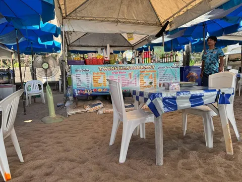
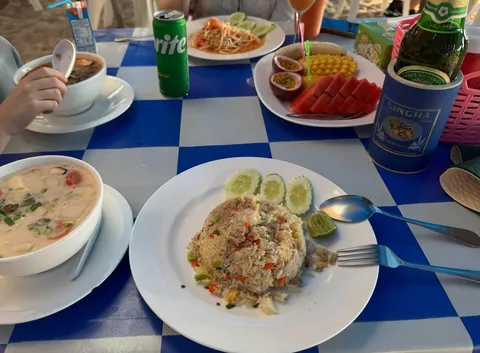
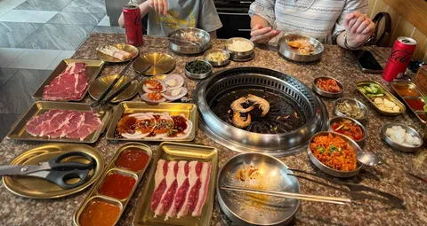
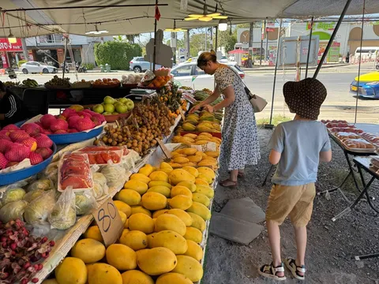
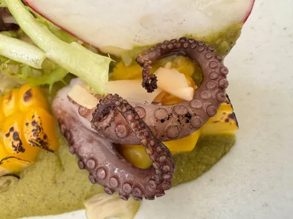

И в завершение Тайской трилогии, немного о еде. В целом, уверен, вы неплохо ее себе представляете. Почти в каждом блюде есть лемонграсс, кафирский лайм, имбирь, куркума. Довольно обидно, что я не особо люблю каждый из этих ингридиентов. В остальном - много морепродуктов, курица, свинина, говядина - почти в любых вариациях (grilled, stir-fried, deep-fried, whatever-the-fck-fried) с лапшой, рисом, овощами. Мой фаворит - кисло-сладкая свинина (с луком, сладким перцем, ананасом).
Важно понимать, что все заведения разделяются на несколько категорий по уровню. Первый условно назовем "пластмассовые стульчики". Это мелкие забегаловки, зачастую на пляже, без стационарной инфраструктуры и удобств, зато очень дешевые. Вторая категория - небольшие заведения, обладающие хоть какой-то капитальной постройкой и водопроводом. Уже поприличней, но все еще доступно. Далее идут более фэнси-места, популярные у тусовщиков. На вершине - фешенебельные рестораны с неоправданно высоким прайсом. И что самое важное - вкус и качество блюд во всех категориях примерно одинаковые. По моим наблюдениям, оптимум - это вторая категория.
Хотя и я последней категории разок побывали - один из ресторанов в нашем отеле имел рекомендацию Мишлен, решили довериться. Зря. На пластмассовых стульчиках было вкуснее. А мишленовскую реко они явно получили не за вкус, и за "повесточку" (organic-eco-habitat-conscious-sustainable-zero-waste-bullshit). И отдельно упомяну занятное местечко, где ты сам на небольшом гриле в центре стола жаришь себе мясо. Ранее были в подобном заведении в Японии, но и тут было неплохо. Особенно с учетом, что за эквивалент 1500р ты получаешь безлимит на все меню.
Фрукты тоже никто не отменял, тут с ними все хорошо. На рынке можно купить что угодно за смешные деньги и потом три дня объедаться в отеле. Из местных фруктов я больше всего люблю маракуйю. С ней, кстати, связан некоторый личный фактор.
Когда я был ребенком, на московских прилавках начинали появляться вкусные йогурты. Мы даже с бабушкой ездили в первый бренд-шоп Danone на Тверскую (в ближайшем универсаме такого не продавали). И на протяжении многих лет одним из моих любимых вкусов оставался йогурт "персик-маракуйя" (или это уже был Fruttis?). Но если персики я встречал, то как выглядит та самая маракуйя - понятия не имел. Притом до какого-то заметного возраста типа лет 22-23. Смотрю сейчас на восьмилетнего сына, который уже пробовал все от маракуйи и папайи до устриц и морских ежей, и думаю, что у него остается все меньше вещей, которым ему еще предстоит удивиться...




